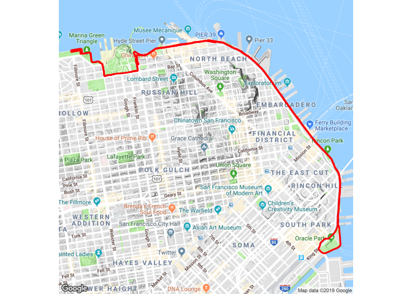

activatr (pronounced like the word “activator”) is a library for parsing GPX files into a standard format, and then manipulating and visualizing those files.
Installation
You can install the released version of activatr from CRAN with:
install.packages("activatr")And the development version from GitHub with:
# install.packages("devtools")
devtools::install_github("dschafer/activatr")Usage
Parsing
activatr contains function to parse, analyze, and display GPX activities. The most basic thing you can do is parse a GPX file into a tibble:
# Get the running_example.gpx file included with this package.
filename <- system.file(
"extdata",
"running_example.gpx.gz",
package = "activatr"
)
df <- parse_gpx(filename)| lat | lon | ele | time |
|---|---|---|---|
| 37.80405 | -122.4267 | 17.0 | 2018-11-03 14:24:45 |
| 37.80406 | -122.4267 | 16.8 | 2018-11-03 14:24:46 |
| 37.80408 | -122.4266 | 17.0 | 2018-11-03 14:24:48 |
| 37.80409 | -122.4266 | 17.0 | 2018-11-03 14:24:49 |
| 37.80409 | -122.4265 | 17.2 | 2018-11-03 14:24:50 |
Visualizing
Once we have that data, we can visualize it atop a map:
library(ggmap)
library(ggplot2)
ggmap::ggmap(get_ggmap_from_df(df)) +
theme_void() +
geom_path(aes(x = lon, y = lat), linewidth = 1, data = df, color = "red")
For more details on how to use the package, check out vignette("activatr").